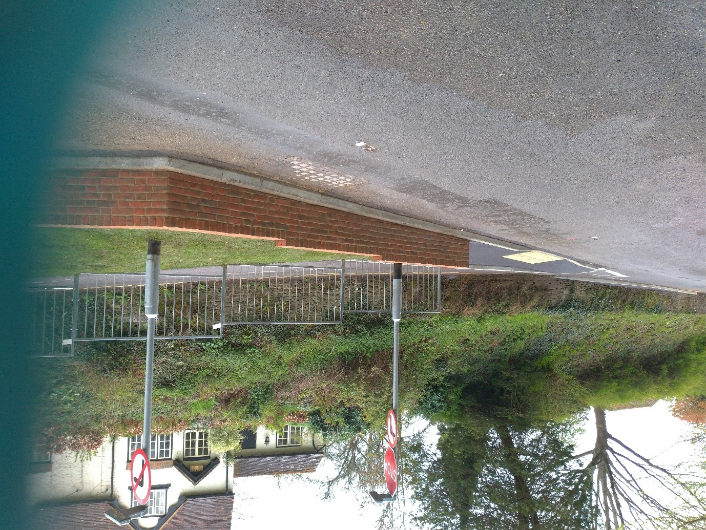

News Updates From EHDC.
New Coronavirus Helpline:- 0333 370 4000
Planning
To view current planning applications please use the following link.
Enforcement Issues
If you are concerned about a possible breach of planning control there is a new on-line form for reporting which can be found at the following link.
Contact us
If you wish to contact the Parish Council then please
(Jenny Hollington) or call 01730-267784

NB: You will need Adobe Acrobat Reader to view the PDF files on this page.
Sheet Parish Council

IMPROVEMENTS TO SCHOOL LANE/FARNHAM ROAD JUNCTION
As many of you will be aware, the work to replace the crumbling steps and extend the pavement down School Lane to a tactile pedestrian crossing point whilst narrowing the entrance to School Lane is almost finished - the planned resurfacing, which will complete the project, has unfortunately been delayed by a couple of weeks due to unavoidable complications arising from the persistent leak from the water main further up Farnham Road.
The new layout should also have the added benefit of slowing traffic through the village.
Sheet Parish Council are grateful to Alex Hawkins, the Project Engineer, for his perseverance and hard work on the Scheme.

Resurfacing of London Road
Sheet Parish Council has been advised by HCC that the work currently being undertaken by SSE on the London Road has been delayed and extended.
Consequently HCC have had no choice other than to postpone their planned resurfacing works until next year. Residents should receive an update letter from HCC in the next few days.
SHEET SUPPORT NETWORK
If you need help during lockdown because of illness or self-isolation, Sheet volunteers remain ready and willing to assist – Please don’t struggle on your own - Phone Jenny Hollington, Parish Clerk (01730 267784) or Jean Morgan, Village Agent (01730 264336 or 07900 028619)
Useful links
For advice from the government about keeping yourself and your family safe during the coronavirus outbreak,
go to www.gov.uk/coronavirus
For updates on how council services are being affected by the outbreak go to www.gov.uk/coronavirus
Remember:
- Stay at home as much as possible.
- Work from home if you can.
- Limit contact with other people.
- Keep your distance if you go out (2 metres apart where possible).
- Wash your hands regularly.
Do not leave home if you or anyone in your household has symptoms.
Council meetings
Sheet Parish Council meet on the second Tuesday of every month (except August). Usually meetings are held at the Village Hall. Agendas are posted on the village noticeboards outside the village hall and in Pulens Lane, as well as on this website, and will give details of how you can join the meetings. Our elected representatives from Hampshire County Council and East Hampshire District Council are present at most meetings. Members of the public are welcome to attend all meetings and one agenda item allows for brief 'public comment'.
The next full meeting of the Parish Council is on Tuesday 18th May 2021 at 7.30pm. The agenda for the meeting will be made available (here) 3-working days prior to the meeting.
Future meeting dates can be viewed here
Planning
Planning matters are normally considered in the full council meeting, but occasionally we hold an additional planning meeting which is advertised on noticeboards and the website as above.
Minutes of meetings
The minutes of Parish Council meetings and any additional Planning meetings are available on the Meeting Minutes page of this website. These are in draft form until formally approved.
Sheet Parish Council Global Warming response
Sheet Parish Council have been asked what they are doing in response to the Climate Emergency, take a look at the response here.
Accounts and Audit regulations.
Any person interested has the right to inspect the accounting records of Sheet Parish Council for the 2019/2020 financial year. The audit of these records is now complete. All documents are available on the Disclosures & Documents page.